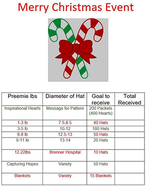
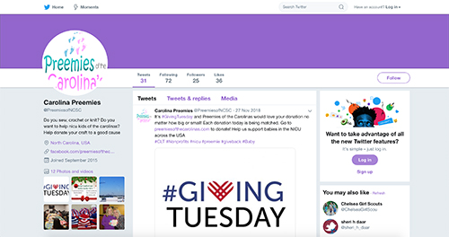
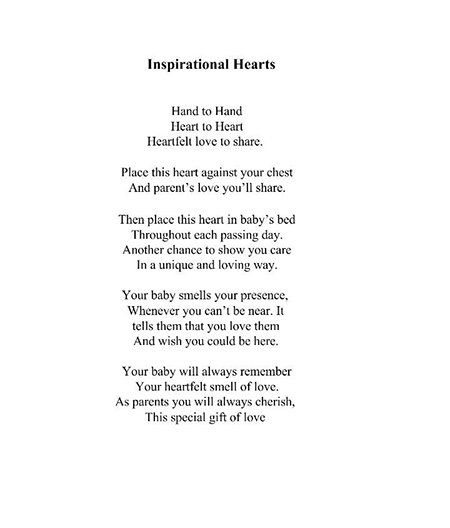
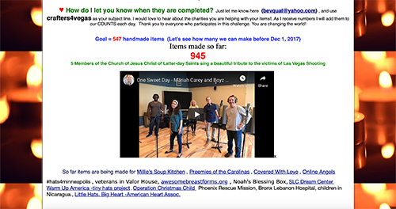
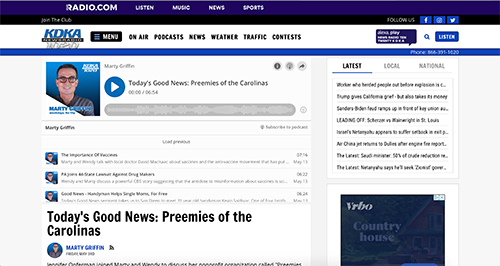
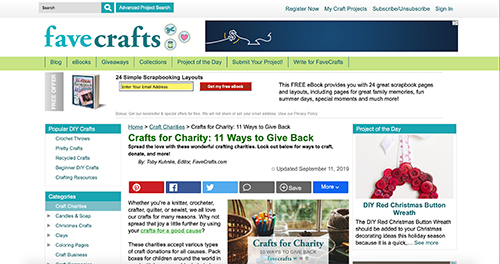
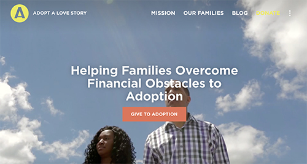

Primary Client Research
I did primary research on my client, Preemies of the Carolinas, and other secondary research on various sharing economy news and organizations. I also interviewed my client and a target audience member.
General information on Preemies of the Carolinas:
What are they/Mission: Founded to help children of the North and South Carolina
who will have any type of stay in the children's hospital.
Their page has a section for people to share their experience of receiving the Preemie packet.
Page calls to action- volunteers to donate hats and blankets for local NICU's and preemies nationwide.
Site has an application where people can request a packet of their goodies.
There is also a button for Donations.
They have a newsletter of new and alerts as well.


This organization has: facebook (2,392 followers), instagram, Twitter, Pinterest.

Facebook info- They seem much more active on facebook than their website.
facebook shows events, testimonies, and more pictures than their website has.

They have no events listed on the website, it gives the notion that they are a dead organization.
Some of the pictures they post on facebook- has no captions and it is hard to tell what the picture is about.
It seems like the facebook page is also the owners personal page, has family pics too.
Facebook announces they need volunteers for halloween, but says nothing about details at all.
Organization founded in October 2015.
They provide- Inspirational hearts, hats, blankets, quilets, sweaters, and hoodies.
They also host faceboon birthday fundraisers.
24 total fundraisers on facebook.
Reviews- 5 out of 5. with pictures of babies wearing their products.
photos and videos- they even post videos of babies that are in the hospital or already at home,
doing well and thriving.
Instagram: casual posts and updates of their work. They are working on printing onesies for babies as a new product.
1,257 followrs on instagram.

Twitter has 72 followers.

Pinterest- they save lots of ideas for products they hand make.
Founder- Jeniffer Opferman. Since 2015- grown and accepted into 11 hospitals.
Branding Elements: everything is pink, turquoise and has baby footprints in the sand.
The main title is in comic sans and it is pink, gray, and blue.
3 different typefaces.
Main titles glows white behind the words....
The reason why jennifer began this organization: Jennifer had an infection and was at a hospital, nightmare experience,
Her family could not come to support her. By day three she was miserable, and imagined how bad it would be for a little baby
ands thier families.
Families stay ther for three, four weeks, months, and some years until the baby is healthy enough to live outside of the hospital.
She had to do something to help and give back for the community.
Inspirational hearts- three main product. two hearts are given per family. Mother wears a heart for 24 hours, and same does the babt.
in 24 hours they switch the hearts and then the baby has the mother's smell and the mother has the baby's heart.
It is meant to create a bond between the baby and mom by the time baby leaves the NICU.
They span across three different states, NC, SC, FL.
They also send packets nationwide, if the shipping costs are paid
They send products for every holiday; CHristmas, Easter, Valentines Day, Halloween, and Thanksgiving.
Some hospitals have 90 beds with preemies in each.

Jennifer and her mom are the main creators, but they also have volunteers from all over the country.
5-10 boxes per week recieved in the mail by Jennifer.
People contact them through website, and facebook.
They are also on the list for amazon nonprofit organizations.
no videos on internet/news.
Printables- poem printed on paper that they give to each family with the inspiraational hearts.
Inspirational hearts poem:

Another print out: "help support a preemie" it is a print out that talks about how to donate and where to donate - links.
Instagram- logo for profile pic
the only place this logo appears is the facebook and instagram page
Test on the logo is so small that you cannot see what is says.
There is absolutely no consistency in colors, style, layout, design of typefaces used in any of the announcements
and banners. The site also has a safechkout.net where you can fill out your contact information, billing info, nad donate
$5 for the cause if you don't know how to knit or crochet.

Design Challange
What is The Problem You Are Trying to Solve?
To provide crochet items for premature babies in the NICU nationally as a means of comfort and support for the families.
The Design Question
How can the website promote donations to the charity and involve more volunteers for hands on work?
The Ultimate Impact
To help children & premature babies who will have any type of stay in children’s hospitals.
Possible Solutions
Create a call to action, make website feel warm and inviting with a baby feel, but without using the generic pink and blue colors. Definitely add more white spaces and negative space. Change the type to something more sophisticated but kind and gentle at the same time. Imagery should be of good quality. Large banner should be changed to a different and fresh design. Follow a specific color palette for all social media and any print-outs or publications. Create a new logo for the site and profile pictures. Create a more simple and organized navigation bar. Appeal to audience and encourage people to donate and volunteer to handmade these items for the charity.
Context and Constraints
Charity is only targeting North and South Carolina, and just recently expanded to Hollywood, Florida. Audience is mainly southern, even though they receive donations from all over the country and can ship a preemie packet to any state if they cover shipping costs.
The Design Question (restated)
How can I create more specific goals that the charity needs to have met, and attract a wider audience to call for action using the website?
Secondary Client Research
WBTV news- Happy Halloween from preemies of the Carolinas. This was an article where they talked about the different
costumes they made for the babies, and how happy the families were to get these cute costumes.

Preemies of the Carolinas was featured on "create to donate"
Where they called people to action, and wanted them to create nad to donate products for this organization.
There was a mother that left a review on "sew for a cause" and talked about the positive feelings they received
from their help and care.
article written by Molly Grantham, Octiber 2018.
Charlotte NC
Talks about their support to eleven hospitals that they provide for.
They talked about halloween costumes that they made for the babies and how cute they were. Superman capes, butterly wings, wonderwoman cape, pumpkin blankets and hats, ladybug outfits, mickey mouse.
Announcing that they are always in need.
KDKA news radio 1020: Marty Griffin- todays goood news: Preemies of the Carolinas.
Talked to jeniffer about her work. Discussed her nonprofit organization. what is the difference in having a full term and a preemie baby. Jeniffer exp[lained and that a full term baby feels like a gallon on milk, and a preemie baby weighs like a soda can.

Pictures of babies wearing costumes
Same article featured on WBTV and WBFM news.
I have researched other nonprofit knit, crochet, or handmade charities. And to my surprise, these sites that deal with
the crafts and arts are pretty terrible in design.
I'm not very happy about them. Some are worse than others.
this site is not that bad, but it is still better than the others simply because the
background is white, unlike all the other sites I found.

This site connects you to other handmaking charities. It is such a mess, again disapointing that all these arts and
crafts sites are this terrible and messy.
This website is another charity site for jewelry.
It is somewhat better than the others. I noticed that many of these artsy sites and charities have script type as
the title of the page. Which is supposed to be all creative and all, but it just makes it longer to read and does not function well.

Okay, this is probably the worst nonprofit artsy site I have come across so far. It is literally like craigslist.
There was no css fiel whatsoever. It is so confusing and messy that I didn't feel like digging through that
site at all. I just immediately decided that it is very unfunctional. I just feel like I can't find even one great looking
nonprofit 'knitting/crochetting or handmaking'site. They all really need help. And I need to pull inspiration from other sites.

This is not a charity site, but this is a website for professional knitters/crochetters that can create an account and post
their work there as well as share and sell theur patterns to each other.
This loging page already looks much better than the charity sites. Yes, it is very bright, but the type is legible
and it is much easier to understand what is going on and what is being asked of you
. even though it is bright, I like the simple buttons and the minimum information thjat they are asking from you.

This site has nothing to do with knitting, but it is a beautiful nonprofit website organization that works really well for its purpose.
I will take for inspiration their clean, energetic, positive and hopeful feel of the site as a whole.
This was an interesting site to look through, they have nice layouts and grid usage is beautiful.
Their typefaces were actually paired up well together, something definitely lacking in my client's website.
This is another example of an efective site. It is a charity and I love the way the call to action button is outlined. It
grasps your attention in the nagivation bar. The heirarchy is established well throughout this site.
Typefaces are simple and sans serif- meaning they look friendly, approachable, and kind. I have not come across a "good"
chairy site that had a serif typeface. Everyone wants to appeal to the audience and seem kind and inviting and warm, friendly
therefore the better websites have only a sans serif font used throughoutntheir site.

This is another successful site working for a charity. The typeface is a sans serif, clean and legible. Navigatin is simple
and easy to use. This is a good example of what I need to create for the charity.